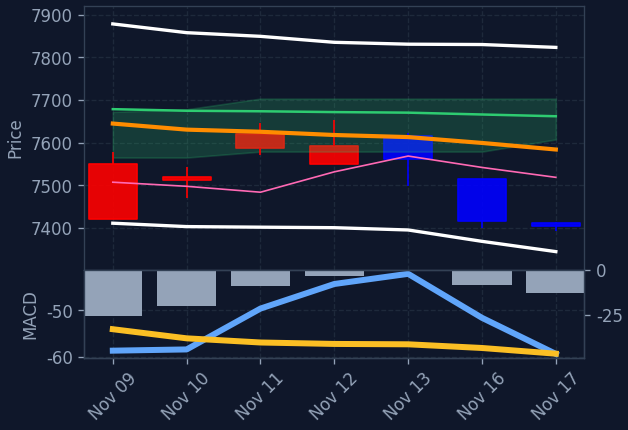
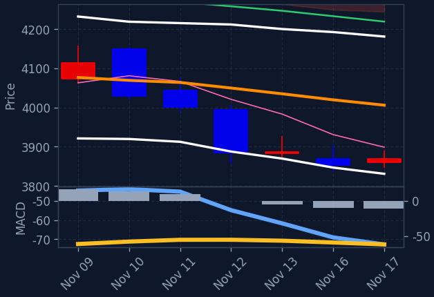
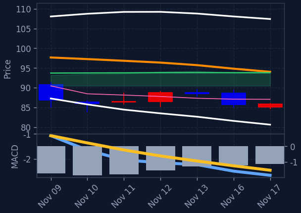
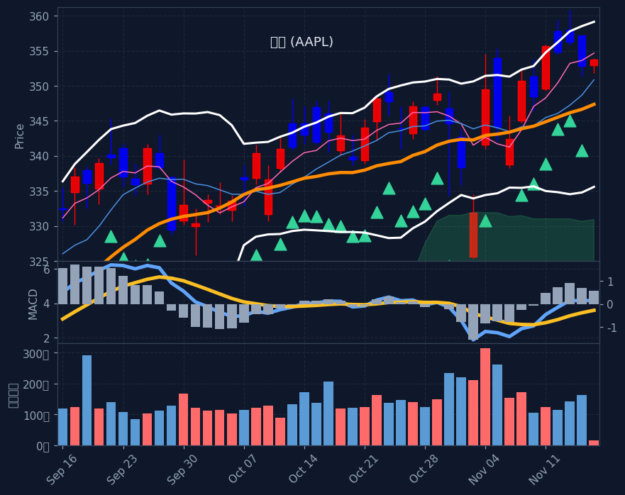
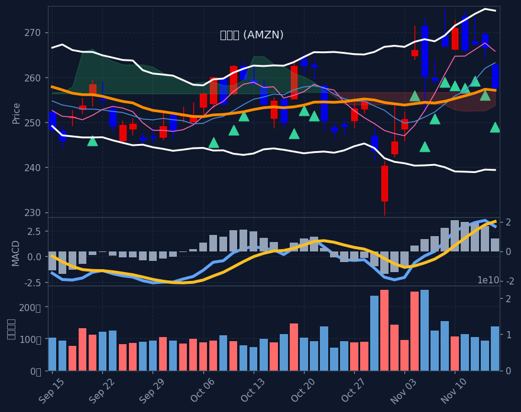
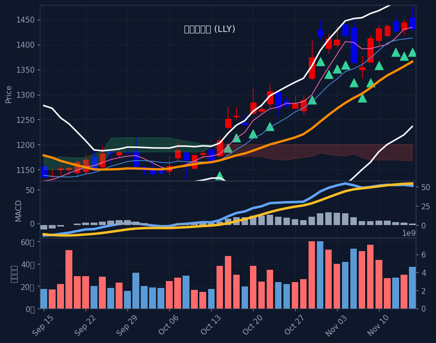
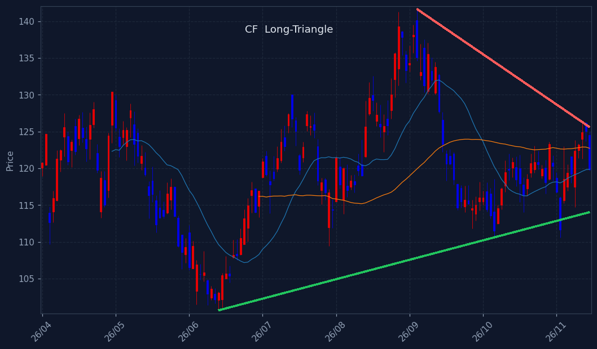
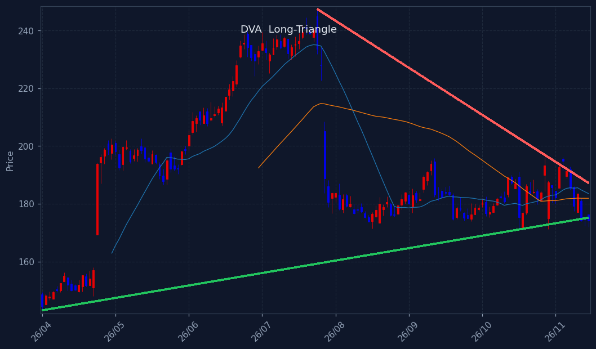
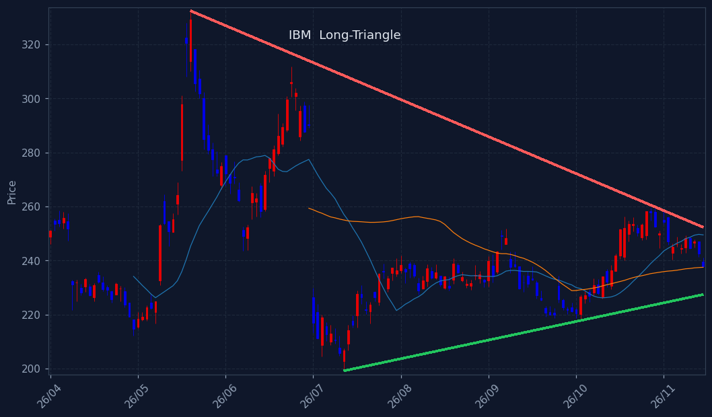
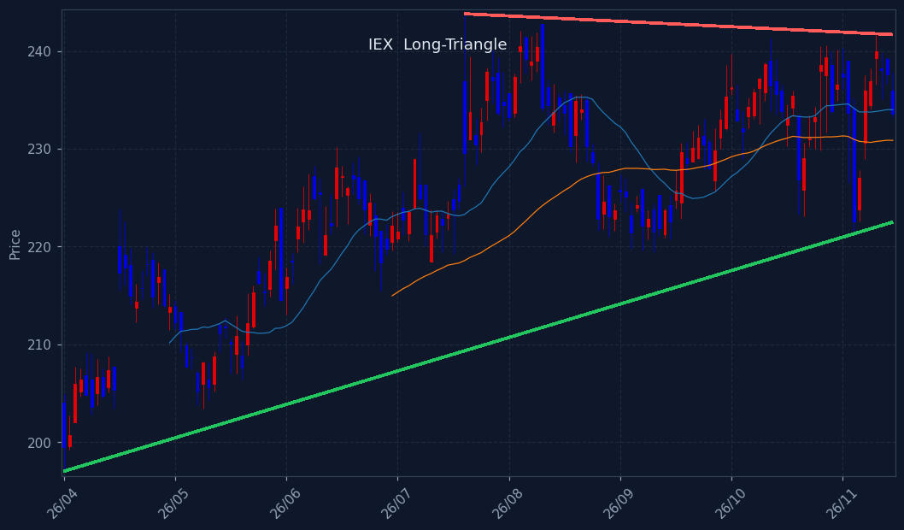

📊 미국장 장전(프리장) 리포트
30 / 100 — 공포
🌎미국 증시 마감




현재 프리장 시장은 엔비디아 실적 발표를 앞둔 극심한 경계감과 미국의 AI 칩 규제 강화 소식 여파로 기술주 중심의 약세 분위기가 이어지고 있습니다. 나스닥 선물(-0.76%)과 S&P500 선물(-0.39%)이 일제히 하락 중이며 2차전지, 방산, 반도체 등 주요 섹터 전반에 하방 압력이 가해지고 있습니다. 시장 전반의 투심이 위축된 가운데 금(+0.41%) 등 안전자산으로 일부 자금이 이동하는 모습입니다.
직전 정규장에서 다우 지수(-1.41%)와 필라델피아 반도체 지수(-5.28%)가 급락 마감한 데 이어, 미국의 AI 칩 수출 규제 강화 뉴스가 아시아 및 글로벌 증시를 압박했습니다. 여기에 엔비디아 실적 발표를 앞둔 관망세가 더해지면서 프리장에서도 메타(-0.87%), 테슬라(-0.72%), 알파벳(-0.64%), 엔비디아(-0.45%) 등 주요 빅테크 종목들이 일제히 약세를 보이고 있습니다. 반도체 3배 레버리지 상품인 SOXL도 -2.36% 하락하며 투자 심리 경색을 반영하고 있습니다.
프리장에서는 2차전지/리튬(-3.27%)과 방산/우주항공(-2.46%) 섹터의 낙폭이 가장 크게 나타나고 있으며, 반도체(-0.64%) 및 경기소비재(-0.51%) 섹터도 약세를 면치 못하고 있습니다. 상대적으로 헬스케어/바이오(-0.18%)와 에너지(-0.36%)가 하락 폭을 줄이며 선방하고 있으나 시장 전반을 견인하기에는 역부족인 상황입니다. AI 칩 규제 이슈와 핵심 기업 실적에 대한 불확실성이 기술주 전반에 먹구름을 가리고 있습니다. 이러한 미 증시의 반도체 및 AI 테마 약세는 반도체 대형주 비중이 높은 한국 증시에도 단기적으로 하방 압력과 외국인 수급 부진을 유발할 시사점이 있습니다.
🇺🇸미국 야간 (선물·M7·SOXL · 마감 등락 + 프리장/애프터 등락)
📊 나스닥 선물 -0.76%
📊 S&P500 선물 -0.39%
- 애플 AAPL·나스닥 마감 -1.0% · 프리장 -0.1%
- 마이크로소프트 MSFT·나스닥 마감 -1.1% · 프리장 -0.3%
- 메타 META·나스닥 마감 -2.4% · 프리장 -0.7%
- 테슬라 TSLA·나스닥 마감 -2.7% · 프리장 -0.9%
- 아마존 AMZN·나스닥 마감 -3.3% · 프리장 -0.4%
- 알파벳 GOOGL·나스닥 마감 -4.1% · 프리장 -0.5%
- 엔비디아 NVDA·나스닥 마감 -4.1% · 프리장 -0.2%
- 한국 ETF(EWY) EWY 마감 -4.4% · 프리장 -1.3%
- SOXL(반도체 3X) SOXL 마감 -16.4% · 프리장 -2.0%
🚀프리장 급등 TOP5 (ABCD 필터 통과 종목 중)
-
P&G
PG·NYSE · 종가 $173.02 (전일 +1.90%) (프리장 -0.04%)
· 퍼스널케어A/C 시그널 ⓘ수렴대 위로 상승전환 (수렴 3.2%) / 120선 위 (+15.2%) · MACD[0선위,상승]
-
애플
AAPL·나스닥 · 종가 $352.78 (전일 -0.98%) (프리장 -0.09%)
· IT하드웨어C 시그널 ⓘ대세 정배열 + 신고가 (-2.2%, 60선+5%)
-
코스트코
COST·나스닥 · 종가 $1,113.74 (전일 +0.68%) (프리장 -0.12%)
· 필수소비재유통A/C 시그널 ⓘ수렴대 위로 상승전환 (수렴 5.3%) / 120선 위 (+16.1%) · MACD[0선위,상승]
-
존슨앤존슨
JNJ·NYSE · 종가 $282.55 (전일 -1.12%) (프리장 -0.22%)
· 제약C/D 시그널 ⓘ추세 반전 (일목구름 위, 5>20, MACD+, 20>60)
-
버크셔해서웨이
BRKB · 종가 $592.85 (전일 -0.02%) (프리장 -0.25%)
· Multi-Sector HoldingsA/C 시그널 ⓘ수렴대 위로 상승전환 (수렴 4.9%) / 120선 위 (+15.8%) · MACD[0선위,상승]
🔥강세 섹터 (상승률 상위)
- 헬스케어/바이오 -0.18%
- 에너지 -0.36%
- 기술/IT -0.38%
- 금융 -0.48%
🔻약세 섹터 (하락률 상위)
- 2차전지/리튬 -3.27%
- 방산/우주항공 -2.46%
- 반도체 -0.64%
- 경기소비재 -0.51%
🧬관심 테마 대장 (양자·우주·AI 등)
-
차임 파이낸셜
CHYM·나스닥
D ⓘ · 종가 $34.29 (전일 +2.21%) 1주일 +5.4%테마: 핀테크 · 시총 17조 5,866억 · 거래대금 7,314억
💰미국장 거래대금 순위 TOP10 (S&P500)
-
1.
애플
AAPL·나스닥 · 종가 $352.78 (전일 -0.98%)
거래대금 21조 6,609억시총 6,851조 1,701억
-
2.
아마존
AMZN·나스닥 · 종가 $257.75 (전일 -3.34%)
거래대금 16조 4,872억시총 3,724조 6,065억
-
3.
일라이릴리
LLY·NYSE · 종가 $1,431.67 (전일 -0.82%)
거래대금 6조 1,366억시총 1,704조 2,226억
-
4.
코스트코
COST·나스닥 · 종가 $1,113.74 (전일 +0.68%)
거래대금 4조 5,311억시총 659조 5,448억
-
5.
P&G
PG·NYSE · 종가 $173.02 (전일 +1.90%)
거래대금 3조 2,529억시총 535조 9,189억
-
6.
존슨앤존슨
JNJ·NYSE · 종가 $282.55 (전일 -1.12%)
거래대금 3조 592억시총 908조 9,863억
-
7.
월마트
WMT·나스닥 · 종가 $128.41 (전일 +0.25%)
거래대금 3조 480억시총 1,361조 4,670억
-
8.
버크셔해서웨이
BRKB · 종가 $592.85 (전일 -0.02%)
거래대금 2조 9,731억시총 1,683조 1,989억
-
9.
애플로빈
APP·나스닥 · 종가 $415.22 (전일 +1.50%)
거래대금 2조 5,168억시총 183조 8,478억
-
10.
코카콜라
KO·NYSE · 종가 $99.48 (전일 +0.23%)
거래대금 2조 4,697억시총 571조 9,082억
🏆미국 추천 Top 3



🇺🇸미국 종목 스크리닝 (전략별 칸 · A/B/C/D)
📊 A 수렴 후 상승 (3)
-
코스트코
COST·나스닥 · 종가 $1,113.74 (전일 +0.68%) (프리장 -0.12%)
A/C 시그널 ⓘ 20일선 +7.3%시총 659조 5,448억 · 거래대금 4조 5,311억테마: 필수소비재유통수렴대 위로 상승전환 (수렴 5.3%) / 120선 위 (+16.1%) · MACD[0선위,상승]
-
P&G
PG·NYSE · 종가 $173.02 (전일 +1.90%) (프리장 -0.04%)
A/C 시그널 ⓘ 20일선 +5.4% 🔥단기과열주의(BB돌파·거래량1.4x)ⓘ시총 535조 9,189억 · 거래대금 3조 2,529억테마: 퍼스널케어수렴대 위로 상승전환 (수렴 3.2%) / 120선 위 (+15.2%) · MACD[0선위,상승]
-
버크셔해서웨이
BRKB · 종가 $592.85 (전일 -0.02%) (프리장 -0.25%)
A/C 시그널 ⓘ 20일선 +5.5%시총 1,683조 1,989억 · 거래대금 2조 9,731억테마: Multi-Sector Holdings수렴대 위로 상승전환 (수렴 4.9%) / 120선 위 (+15.8%) · MACD[0선위,상승]
📈 C 추세추종 (3)
-
애플
AAPL·나스닥 · 종가 $352.78 (전일 -0.98%) (프리장 -0.09%)
C 시그널 ⓘ 20일선 +1.8%시총 6,851조 1,701억 · 거래대금 21조 6,609억테마: IT하드웨어🔻 한국인 순매도 최근5일 206억(자금유출)대세 정배열 + 신고가 (-2.2%, 60선+5%)
-
일라이릴리
LLY·NYSE · 종가 $1,431.67 (전일 -0.82%) (프리장 -0.31%)
C 시그널 ⓘ 20일선 +4.8% ⚠️끝물ⓘ시총 1,704조 2,226억 · 거래대금 6조 1,366억테마: 제약대세 정배열 + 신고가 (-3.0%, 60선+16%) · ⚠️끝물주의(RSI다이버전스(77→67))
-
코스트코
COST·나스닥 · 종가 $1,113.74 (전일 +0.68%) (프리장 -0.12%)
A/C 시그널 ⓘ 20일선 +7.3%시총 659조 5,448억 · 거래대금 4조 5,311억테마: 필수소비재유통대세 정배열 + 신고가 (-0.3%, 60선+15%)
🔃 D 추세 반전 (3)
-
아마존
AMZN·나스닥 · 종가 $257.75 (전일 -3.34%) (프리장 -0.33%)
D 시그널 ⓘ 20일선 +0.3%시총 3,724조 6,065억 · 거래대금 16조 4,872억테마: 종합소매🇰🇷 한국인 순매수 최근5일 +503억추세 반전 (일목구름 위, 5>20, MACD+, 20>60)
-
존슨앤존슨
JNJ·NYSE · 종가 $282.55 (전일 -1.12%) (프리장 -0.22%)
C/D 시그널 ⓘ 20일선 +3.5%시총 908조 9,863억 · 거래대금 3조 592억테마: 제약추세 반전 (일목구름 위, 5>20, MACD+, 20>60)
-
애플로빈
APP·나스닥 · 종가 $415.22 (전일 +1.50%) (프리장 -1.06%)
C/D 시그널 ⓘ 20일선 +32.8%시총 183조 8,478억 · 거래대금 2조 5,168억테마: 광고추세 반전 (일목구름 위, 5>20, MACD+, 20>60)
※ S&P500 대상 A/B/C/D 전략별 분류(각 칸 거래대금순). 한 종목이 여러 전략에 잡히면 각 칸에 중복 표기. 백테스트상 기계적 엣지는 약하며 매수 추천이 아닙니다. 판단·책임은 본인.
🇰🇷한국인 자금흐름 (서학개미 · 최근 5거래일 순매수/순매도, 억원)
📅 결제일 11/10~11/16(5거래일) 기준 · 오늘 11/17 기준 약 1일 전 데이터 · T+2 결제 기준(실제 매매는 약 2거래일 전)
💸 한국인 순매수 일평균: +5,825억 (전주 +8,751억 대비 -33.4%) · 5일 총액 +29,124억
💰 순매수 TOP5 — 개별종목 (11/10~11/16 결제 기준)
- 엔비디아 NVDA·나스닥 +5,615억시총 5,035조 3,657억 · 거래대금 69조 1,078억
- 특정 티커 불명 X +2,125억
- AMD AMD·나스닥 +1,130억시총 1,104조 5,677억 · 거래대금 24조 1,713억
- 메타 META·나스닥 +1,111억시총 2,138조 5,242억 · 거래대금 9조 6,555억
- 알파벳(구글) GOOGL·나스닥 +864억시총 4,658조 4,005억 · 거래대금 13조 1,269억
📦 순매수 TOP5 — ETF (11/10~11/16 결제 기준)
- 프로셰어즈 울트라프로 QQQ ETF TQQQ +2,668억거래대금 5조 9,948억
- 반도체 3배 레버리지 ETF SOXL +1,390억거래대금 11조 8,540억
- 나스닥100 2X(QLD) QLD +1,348억거래대금 7,439억
- 나스닥100 ETF(QQQM) QQQM +891억거래대금 1조 8,837억
- 나스닥100 ETF(QQQ) QQQ +876억거래대금 37조 8,271억
🔻 순매도 TOP3 — 자금 유출 (11/10~11/16 결제 기준)
- 디렉션 데일리 세미컨덕터 불 3X ETF SOXL −7,824억거래대금 11조 8,540억
- 테슬라 TSLA·나스닥 −911억시총 2,004조 6,576억 · 거래대금 15조 2,940억
- 셀레스티카 CLS·NYSE −651억시총 40조 1,663억 · 거래대금 9,595억
※ 예탁결제원(SEIBro) 최근 5거래일 한국인 순매수/순매도 결제금액(T+2) · 11/10~11/16 결제 기준(실제 매매는 약 2거래일 전). 자금이 어디로 유입·유출되는지 참고용.
🩹E 투매 바닥 반등 (투매 capitulation + 반등 · 🔥=지수 동반 바닥)
현재 E(투매 바닥) 신호 없음 — 시장이 바닥권(지수 RSI·공포탐욕 극단)이 아닐 땐 비어있는 게 정상입니다.
※ 투매 바닥(RSI≤30+50선이격+거래량폭증)에서 반등 시작 포착, 4시간봉 RSI도 과매도. 🔥는 지수(나스닥/S&P·코스피)도 RSI<35 동반 바닥(강신호). 떨어지는 칼날 위험 — 매수 추천 아님, 판단·책임 본인.
🚀급등 초입 (20일 신고가 돌파·거래량 급증)
-
화주 그룹
HTHT·나스닥 · $54.88
+8.91%
급등초입 (20일돌파·거래량2.2배·당일+8.9%·20선+13%)
-
타이슨 푸드
TSN·NYSE · $63.95
+8.72%
급등초입 (20일돌파·거래량2.2배·당일+8.7%·20선+10%)
※ 급등 초입(추세확인보다 빠른 돌파 진입) 참고용. 백테스트 표본 적고 상승장 기준 — 가짜 신호·되돌림 위험, 매수 추천 아님.
📐F. 60일선 지지 (60일선까지 눌렸다 지지 마감 · 참고용)
-
치즈케익 팩토리
CAKE·나스닥 · $109.73
+0.57%
60일선 지지 (저가 -1.8%·종가 +1.3%·꼬리지지 74%)
-
익스페디터스 인터내셔널 오브 워싱턴
EXPD·NYSE · $195.34
+0.28%
60일선 지지 (저가 -0.3%·종가 +1.6%·꼬리지지 100%)
-
AES 코퍼레이션
AES·NYSE · $14.94
+0.20%
60일선 지지 (저가 +0.2%·종가 +0.4%·꼬리지지 100%)
-
바이오-테크네
TECH·나스닥 · $72.79
-0.01%
60일선 지지 (저가 +0.3%·종가 +0.4%·꼬리지지 57%)
-
콘스텔레이션 에너지
CEG·나스닥 · $277.82
-0.85%
60일선 지지 (저가 +0.7%·종가 +2.4%·꼬리지지 63%)
-
모놀리식파워
MPWR·나스닥 · $1,314.00
-5.50%
60일선 지지 (저가 -0.2%·종가 +2.5%·꼬리지지 63%)
※ 60일선까지 눌렸다 지지받고 마감한 종목(참고 태그). 백테스트상 다음날 반등 엣지 없음(승률 48~49%·생존편향 포함) 확인됨 — 매수 추천·시그널 아님, 종합점수/Top3에도 미반영. 단순 참고용.
🧬삼각수렴 임박 (변동성 수축·돌파 직전 코일 · 참고용)






※ 삼각수렴 돌파 임박 종목. 📐장기 삼각수렴(수개월 대형 삼각형, 볼록껍질 추세선+실수축) = 백테스트 491건 승률 66%·평균 +8.7%/20일로 엣지 확인(HOOD·TSLA류 대박 초입). 단기 코일 = 엣지 약함(승률 ~60% 베타 수준). 🔻대칭=고점↓·저점↑ / 🟰바닥지지=저점 평평. 매수추천 아님·종합점수/Top3 미반영(관찰용).